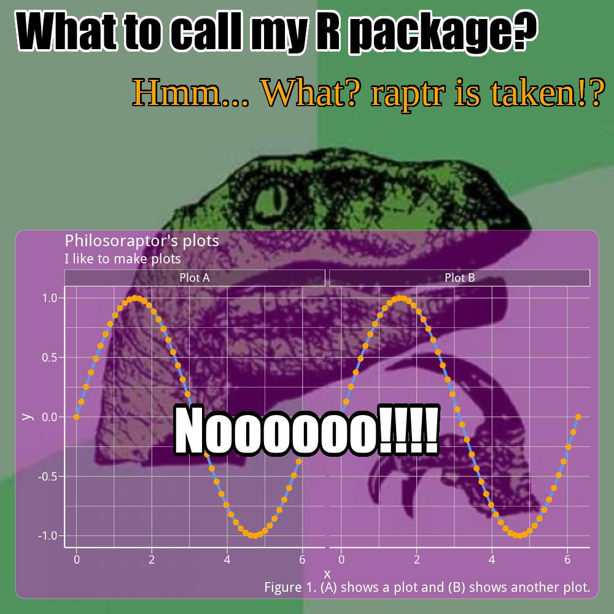

Make memorable plots with memery. memery is an R package that generates internet memes including superimposed inset graphs and other atypical features, combining the visual impact of an attention-grabbing meme with graphic results of data analysis. Version 0.4.2 of memery is now on CRAN. The latest development version and a package vignette are available on GitHub.
Changes in v0.4.2
This latest version of memery includes a demo Shiny app.
library(memery)
memeApp()Animated gif support is now also included (example below). This relies on the magick package and ImageMagick software, but this is optional and these libraries are not required for you to use memery if you have no interest in animated gifs. For example, when launching the demo Shiny app, if you do not have these libraries installed on your system, the app launches in your browser in a simplified form. It will only accept png and jpg files as inputs and a default static image will be shown at startup. Alternatively, the app launches in full mode, will also accept gif inputs, and the default image shown is an animated gif. The only function in memery that pertains to gifs is meme_gif, which is distinct from the main package function, meme. If you call meme_gif without the supporting libraries, it simply prints a notification about this to the console.
Example usage
Below is an example interleaving a semi-transparent ggplot2 graph between a meme image backdrop and overlying meme text labels. The meme function will produce basic memes without needing to specify a number of additional arguments, but this is not the main purpose of the package. Adding a plot is then as simple as passing the plot to inset.
memery offers sensible defaults as well as a variety of basic templates for controlling how the meme and graph are spliced together. The example here shows how additional arguments can be specified to further control the content and layout. See the package vignette for a more complete set of examples and description of available features and graph templates.
Please do share your data analyst meme creations. Enjoy!
library(memery)
# Make a graph of some data
library(ggplot2)
x <- seq(0, 2 * pi, length.out = 50)
panels <- rep(c("Plot A", "Plot B"), each = 50)
d <- data.frame(x = x, y = sin(x), grp = panels)
txt <- c("Philosoraptor's plots", "I like to make plots", "Figure 1. (A) shows a plot and (B) shows another plot.")
p <- ggplot(d, aes(x, y)) + geom_line(colour = "cornflowerblue", size = 2) +
geom_point(colour = "orange", size = 4) + facet_wrap(~grp) + labs(title = txt[1],
subtitle = txt[2], caption = txt[3])
# Meme settings
img <- system.file("philosoraptor.jpg", package = "memery")
lab <- c("What to call my R package?", "Hmm... What? raptr is taken!?", "Noooooo!!!!")
size <- c(1.8, 1.5, 2.2) # label sizes
pos <- list(w = rep(0.9, 3), h = rep(0.3, 3), x = c(0.45, 0.6, 0.5), y = c(0.95,
0.85, 0.3))
fam <- c("Impact", "serif", "Impact")
col <- list(c("black", "orange", "white"), c("white", "black", "black"))
gbg <- list(fill = "#FF00FF50", col = "#FFFFFF75") # graph background
# Save meme
meme(img, lab, "meme.jpg", size = size, family = fam, col = col[[1]], shadow = col[[2]],
label_pos = pos, inset = p, inset_bg = gbg, mult = 2)
Animated gif example
d$grp <- gsub("Plot", "Cat's Plot", d$grp)
p <- ggplot(d, aes(x, y)) + geom_line(colour = "white", size = 2) + geom_point(colour = "orange",
size = 1) + facet_wrap(~grp) + labs(title = "The wiggles", subtitle = "Plots for cats",
caption = "Figure 1. Gimme sine waves.")
lab <- c("R plots for cats", "Sine wave sine wave...")
pos <- list(w = rep(0.9, 2), h = rep(0.3, 2), x = rep(0.5, 2), y = c(0.9, 0.75))
img <- "http://forgifs.com/gallery/d/228621-4/Cat-wiggles.gif"
meme_gif(img, lab, "sine.gif", size = c(1.5, 0.75), label_pos = pos, inset = p,
inset_bg = list(fill = "#00BFFF80"), fps = 20)